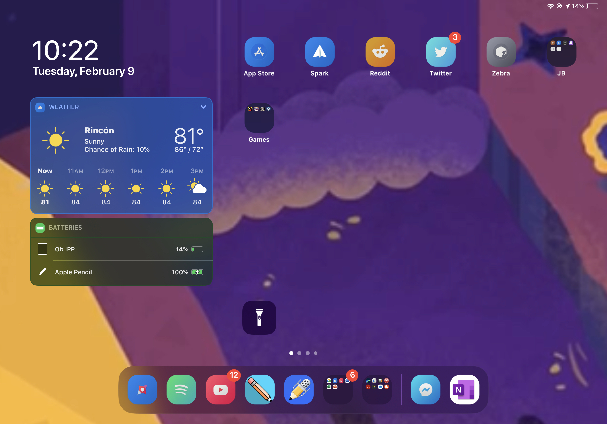

About Me
I am a vivid Apple enthusiast and a Jailbreak user and follower. I have a history related to jailbreak way back in 2011 when I got my first Apple product, the IPod 4 generation and when I stumble uppon a old how to jailbreak tutorial using a old Redsn0w jailbreak. Ever since I followed the comunity from a far because before I didn't exactly have a PC and the correct IOS version to able to Jailbreak it.
My personal IPad running the IOS 13.4 Jailbreak. You can also press wheres there's a custom tweak above to visit the tweak page!
| All my IPad photo (image above) listed Tweaks Name: | |
|---|---|
| Frame | It's to add animated wallpaper on both the homescreen and lockscreen |
| HSWidgets | To get kinda like the homepage widgets on IOS 14 on IOS 13 |
| Snowboard | Its the engine on how the custom Icon are running on the device |
| ColorMeNotifs | Widget and also has notification to change its background blur colors |
Even though my Phone is not currently a IDevice, I still avid Jailbreak supporter and seeing people doing not just once, multiple attempts from aforementioned Correllium lawsuit and other events. That's one of some more reason I created this website for, spread the word of how Apple monopoly on everything in their platform wants to destroy a comunity of other avid Apple's IOS fans.